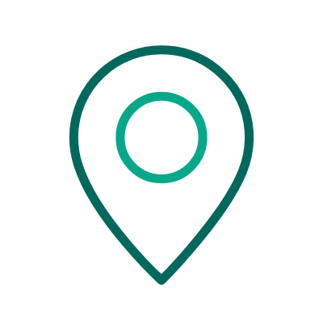
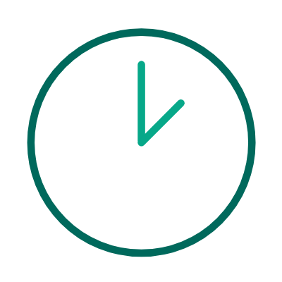

Como Descartar Seu Eletrônico
- Separe seus eletrônicos e eletrodomésticos
- Leve até nosso ponto de coleta autorizado
- Evite jogar no lixo comum
Materiais Aceitos:
📱Equipamentos Eletrônicos e de Uso Pessoal:
- Equipamentos de entretenimento
- Equipamentos de informática
- Eletrodomésticos inteligentes
- Equipamentos médicos eletrônicos
- Equipamentos industriais e comerciais
- Equipamentos de rede e telecomunicações
📺Eletrodomésticos:
- Linha Branca (Cozinha, Lavanderia e Refrigeração)
- Linha Marrom (Entretenimento e Comunicação)
- Pequenos Eletrodomésticos (Uso pessoal)
🏭Equipamentos Industriais:
- Máquinas de Produção
- Equipamentos de Automação Industrial
- Controle e Medição
- Equipamentos de Logística e Armazenamento
Locais de Coleta
 Av. Gilberto Dini, 178 - Jardim Bom Clima, Guarulhos - SP, 07122-210

Horário de Funcionamento:
Segunda a Sexta das 8h às 17h (fechado das 12h às 13h)
Fale Conosco
Para mais informações sobre descarte consciente, entre em contato: